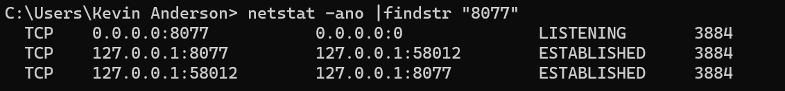
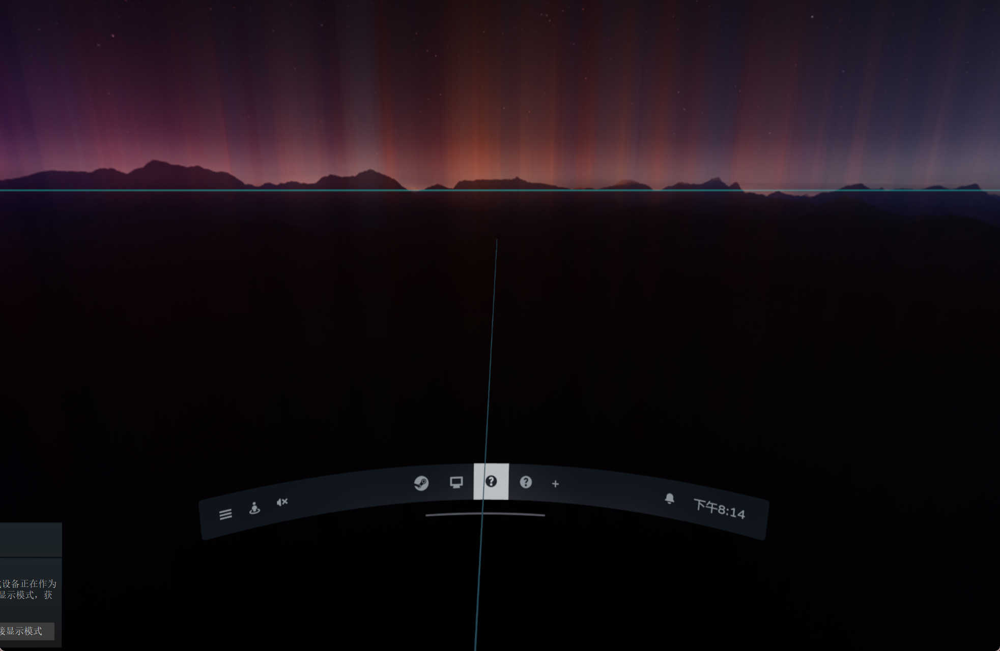
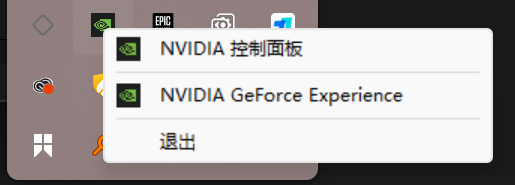
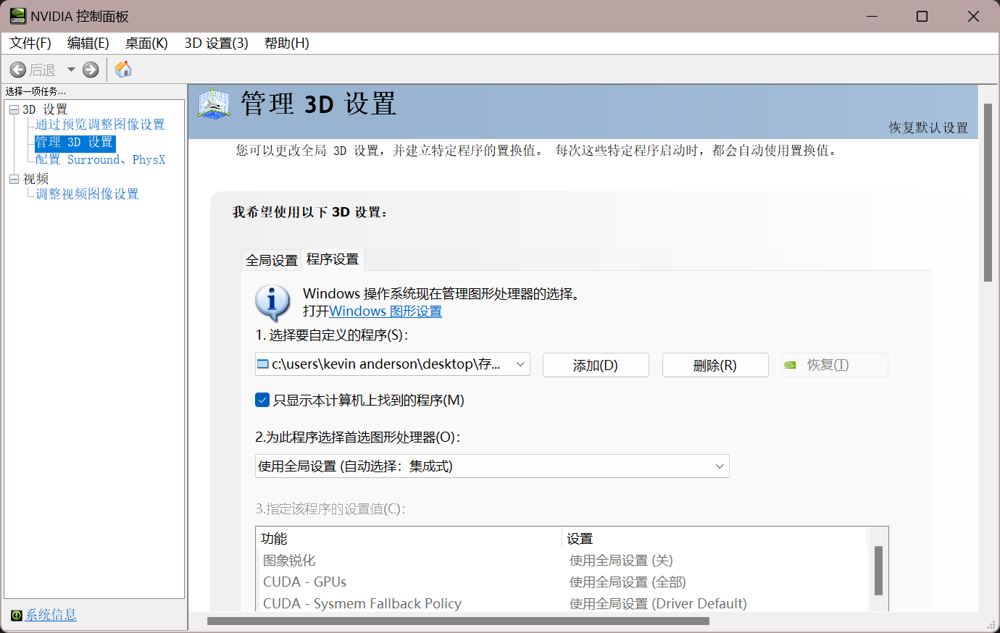
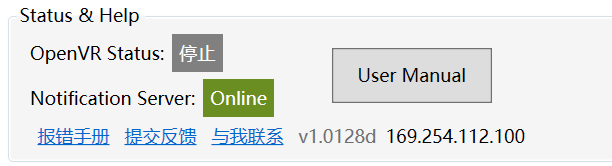

欢迎来到NotificationCat 错误处理手册
感谢您从Itch.io 或 Steam 商店购买此软件🤗此页面的内容将会帮助您处理运行软件时遇到的错误。如果您遇到了错误手册中不存在的错误，请通过用户支持中提供的方式来提交工单获取开发者帮助！
善用网站搜索功能
使用搜索功能搜索您遇到的错误提示会帮助您节省检索文档的时间。
PC端错误💻
这个板块包含PC上的NotificationCat VR的错误及解决方案
程序启动后无响应 / 提示缺少.Net Framework Runtime / 程序启动后闪退
程序无法启动是一个很复杂的问题，当遇到没有任何错误的提示或异常的程序行为时，开发者很难定位其故障原因。当您遇到此类情况时，推荐您尝试以下操作：
- 完全卸载NotificationCat VR程序
- 删除Steam/config文件夹下的appconfig.json文件中指向NotificationCat VR程序app.vrmanifest的路径（通常在您使用过随SteamVR启动功能后生成）
- 尝试重新安装程序
如果以上步骤仍无法解决应用程序的异常行为，请提交开发者工单反馈。
本程序使用.Net Framework 4.7.2开发，当您的电脑未安装.NET Runtime时运行程序可能会得到需要运行时错误。请从此链接下并安装.Net Framework 4.7.2 Runtime后重试。
OpenVR状态始终处于“Offline”或“Error”状态，即使重新安装程序或重启SteamVR
这个一个很少见的OpenVR服务错误，当遇到这种情况时，请尝试设置OpenXR运行时为SteamVR：
- 打开SteamVR，在设置窗口中显示高级设置
- 进入OpenXR 选项卡
- 单击 将SteamVR设置为 OPENXR 运行时
如果在设置SteamVR为OpenXR运行时后OpenVR状态仍始终处于“Offline”或“Error”状态或OpenXR运行时已经为SteamVR，请提交开发者工单反馈。
通知服务器状态始终处于“Offline”或“Error”状态，即使重新安装程序或重启电脑
如果您在启动程序时弹出有关通知服务器的报错，请参考相关报错解决方案。如果您没有遇到任何有关通知服务器错误的提示，请提交开发者工单反馈。
启动通知服务器时出现错误，请参考错误手册来解决此问题
在解决此问题前，请先检查您的Windows系统环境。本软件使用TCP 8077与8079端口进行通信，任何关于相关端口的防火墙规则或占用都会导致通知服务器状态始终处于“Offline”或“Error”状态并弹出此错误提示。
如何检查端口是否正常：
- 关闭NotificationCat VR程序
- 按键盘上的 Win键+R键弹出运行窗口，输入cmd并回车
- 在Cmd窗口中输入以下命令并查看结果
netstat -ano |findstr "8077"
回车，并继续输入
netstat -ano |findstr "8079"
在正常情况下，输入上述命令后应该没有任何输出，如果出现如图相似的输出。则表明有程序正在占用上述端口。

请通过以下命令来查找占用程序的信息
tasklist|findstr "命令输出末尾数字"
此命令将返回占用程序的进程名，您可以通过Windows任务管理器来查找程序的具体位置和信息。
如果您没有遇到端口占用问题，请检查本机的防火墙规则：
- 关闭NotificationCat VR程序
- 按键盘上的 Win键+R键弹出运行窗口，输入control并回车
- 进入Windows Defender 防火墙，选择左侧高级设置
- 在出站规则和入站规则中，删除任何有关8077和8079的限制规则
- 重启电脑，重新运行软件。
如果您检查了防火墙及端口占用仍未发现任何有影响程序通信的设定，请提交开发者工单反馈。
注意反病毒软件
有些反病毒可能会阻止应用进行网络通信，遇到此类错误时请尝试关闭反病毒软件后重试。
当手机连接至通知服务器时出现错误，请参考错误手册来解决此问题
如果您没有遇到任何有关通知服务器错误的提示，请尝试重启软件或电脑，如果问题仍旧存在请提交开发者工单反馈。
客户端在处理数据时遇到错误，请参考错误手册来解决此问题
这个错误是由于程序从发送端接收到了不合法的数据，此类错误通常是由于在获取通知时出现BUG导致，请尝试重启Windows或发送端程序（如Android或手机链接应用）
如果问题仍旧存在请提交开发者工单反馈。
启动Toast模式时出现错误，请参考错误手册来解决此问题
请参考吐司模式一节重新安装UWP辅助程序并重试，如果问题仍旧存在请提交开发者工单反馈。
启动吐司模式时出现，获取打开此“ncatvr”链接的应用
请参考吐司模式一节重新安装UWP辅助程序并重试，如果问题仍旧存在请提交开发者工单反馈。
随SteamVR启动不工作，或下次启动时程序不会记住我的选项
程序依赖其文件夹下的NotificationCatVR.exe.config文件来记住您的首选项，如果您删除，移动或覆盖了此文件那么选项便会丢失。
如果NotificationCatVR.exe.config文件没有异常，请检查您的Steam/config文件夹下的appconfig.json文件是否开放写入权限。
随SteamVR启动会导致SteamVR崩溃，或NotificationCat VR会导致SteamVR崩溃。
如果您经过实验确定是NotificationCat VR会导致SteamVR崩溃，请提交开发者工单反馈。
与手机连接后（或启用吐司模式后）遇到通知会闪退
请检查您的OpenVR状态，您应该在启动SteamVR之后再打开此程序，如果问题仍旧存在请提交开发者工单反馈。
程序无法获取电脑IP地址，这可能是因为您的电脑有多个网卡或ipv4地址，请参考错误处理手册来解决此问题。
如果您的电脑中有安装Vmware Hyper-v等虚拟化程序，或v2ray等虚拟网络隧道工具。软件可能会在您的电脑上创建多个虚拟网卡导致NotificationCat VR无法寻找到正确的WLAN IPV4地址，请使用命令提示符或其他工具手动查找您的无线网卡IPV4地址并连接，如果问题仍旧存在请提交开发者工单反馈。
双显卡设备解决Dashboard程序显示问题
由于OpenVR兼容层问题，仪表盘程序无法自动设置程序为高性能GPU显卡启动，这可能会导致您在SteamVR 仪表盘中打开NotificationCat VR设置程序时不会显示任何内容。

要解决此问题，你需要通过独立显卡驱动程序面板（例如NVIDIA 控制面板）将程序目录中的dashboard.exe程序设置为“独立显卡启动”模式
以VIDIA 独立显卡为例
在您的任务栏托盘中找到NVIDIA控制中心图标，并右键选择NVIDIA控制面板

在管理3D设置——>程序设置中，添加选择程序目录中的dashboard.exe——>将“为此程序选择首选的图形处理器”设置为：高性能NVIDIA处理器。

单击应用保存，重启NCATVR程序即可！
Android端错误📱
这个板块包含Android上的NotificationCat VR的错误及解决方案
无法安装APK包
您的Android操作系统必须是Android 10及以上版本。
应用打开后闪退 / 未响应
程序无法启动是一个很复杂的问题，当遇到没有任何错误的提示或异常的程序行为时，开发者很难定位其故障原因。当您遇到此类情况时，推荐您尝试以下操作：
- 重新安装
如果以上步骤仍无法解决应用程序的异常行为，请提交开发者工单反馈。
无法从更新服务器获取版本号,请参考错误手册来解决此问题
出现此问题表明您的设备无法与软件的更新服务器通信并获取版本号，可能是软件更新服务器暂时维护 / 下线或您的设备无法访问互联网。您可继续使用旧版本，但可能会导致一些出乎意料的错误。
否则，请手动进入下载页面获取新版本
连接失败，请参考错误手册来解决此问题
当您尝试将Android设备与电脑连接时可能会遇到此问题，请留意错误类型与信息。
-
An Invalid IP Address was specified 您必须在输入框中输入正确的IP地址！
-
Connection timed out 请确认您的IP地址是否正确或Android设备是否与PC处于一个网段下，您可以通过PC端软件查看IP。

注意IP不唯一
当您的电脑安装了虚拟网卡或同时拥有IPV4和IPV6地址时，此功能将返回第一个IP。此IP可能不是您的WLAN IP ！
-
Connection refuse 您的IP地址正确但PC拒绝了本次连接，请参考启动通知服务器时出现错误，请参考错误手册来解决此问题一节来处理。
-
Socket is already connected 一台Android手机只能连接一台PC设备，要想重新连接，请重启应用程序。
-
network unreachable 请检查您的路由器转发设置
将程序放置后台 / 切换到其他应用时通知消息不会被转发
请关闭针对应用的任何省电优化设置（例如后台/息屏冻结等）
连接成功但程序不会转发任何消息
请检查应用是否允许 “获取所有应用程序通知”的权限。
国产安卓系统注意
由于国产安卓系统（例如MIUI，各种OS等）魔改了API通知规则权限。每次启动程序时必须重新关闭——开启授予获取所有应用通知权限！否则通知转发将不会正常工作！原生Android系统（如pixel）不受影响。
扫码连接模式不会启动摄像机或卡死
请检查应用是否允许 “使用摄像头” 等权限
吐司模式🍞
这个板块包含PC上的UWP辅助程序的错误及解决方案
程序启动后在Logo处卡住 / 程序启动后闪退
请参考吐司模式一节重新安装UWP辅助程序并重试，如果问题仍旧存在请提交开发者工单反馈。
你的系统暂不支持Toast通知转发，请参考使用手册来解决此问题
您的系统版本低于 Windows 10 1809 秋季更新，无法使用此功能。
你必须允许程序读取通知的权限，请参考使用手册来解决此问题
您可能在应用程序启动时拒绝了其读取通知权限的请求。请重新允许程序权限：
- 打开Windows 设置，跳转到隐私和安全性
- 在应用权限中找到“通知”
- 允许让应用访问通知
- 重启UWP辅助程序
如果问题仍旧存在请请参考吐司模式一节重新安装UWP辅助程序并重试
权限处理时遇到错误，请参考使用手册来解决此问题
请参考吐司模式一节重新安装UWP辅助程序并重试，如果问题仍旧存在请提交开发者工单反馈。
无法与通知服务器连接！请参考错误手册解决此问题
请参考请参考启动通知服务器时出现错误，请参考错误手册来解决此问题一节来处理，如果问题仍旧存在请请参考吐司模式一节重新安装UWP辅助程序并重试。
UWP辅助程序不会转发我的Windows通知
请检查是否有程序正在占用通知获取服务，如果问题仍旧存在请请参考吐司模式一节重新安装UWP辅助程序并重试。
未记录在案的错误❌
请提交开发者工单反馈。